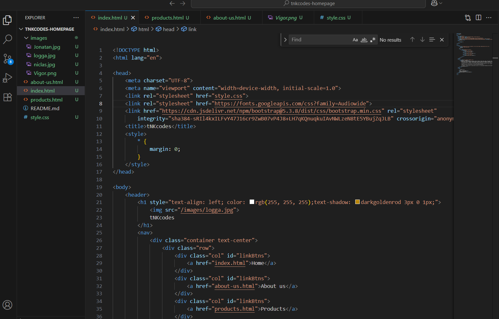

Welcome to tNKcodes!
tNKcodes is a forward-thinking technology company founded on August 25th, 2025, and proudly based in the
small Swedish town of Bredaryd. Specializing in AI solutions and web development, tNKcodes is committed
to delivering modern, scalable, and intelligent digital experiences for clients across industries.
In addition to our core services, we offer robust backend programming expertise in Java, enabling
seamless and secure infrastructure for web and software applications.
At tNKcodes, innovation meets reliability—our passion for cutting-edge technology and clean code drives
everything we do.
